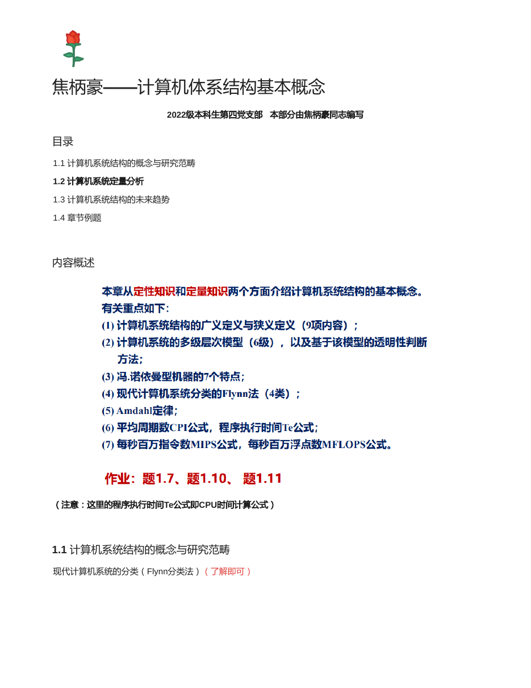
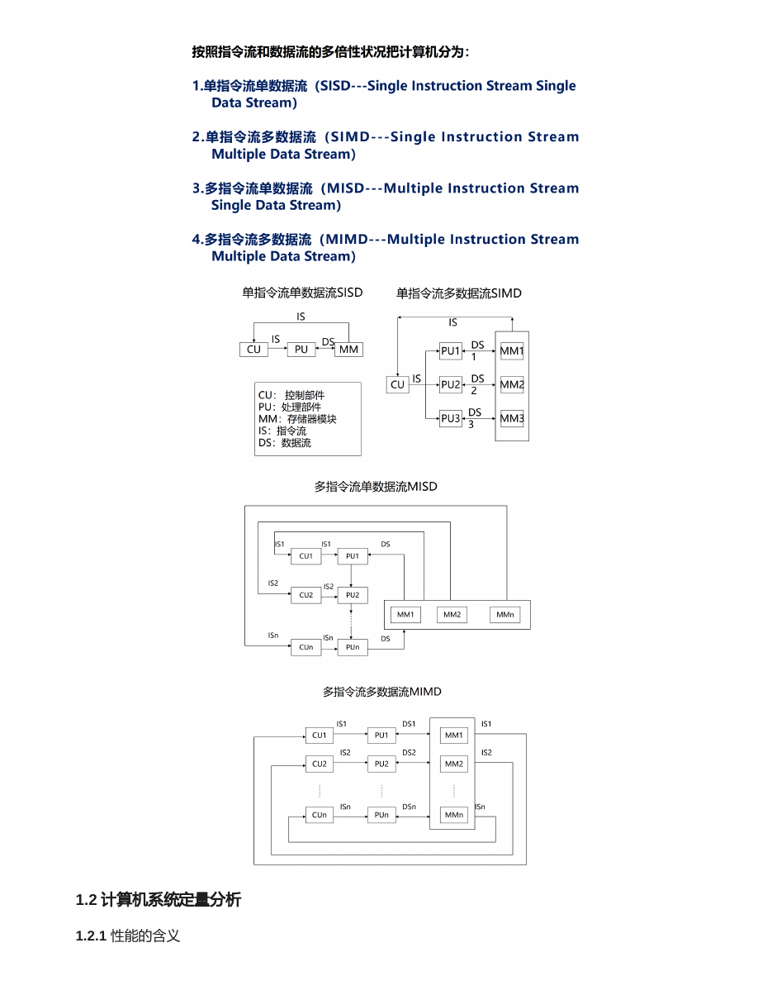
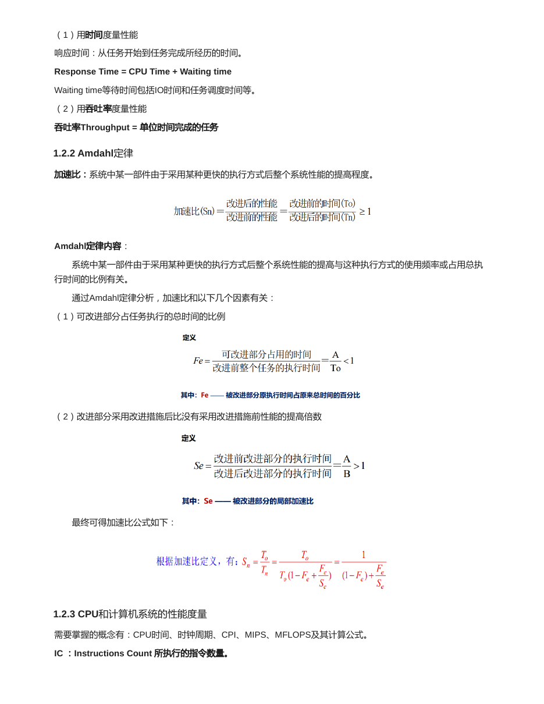
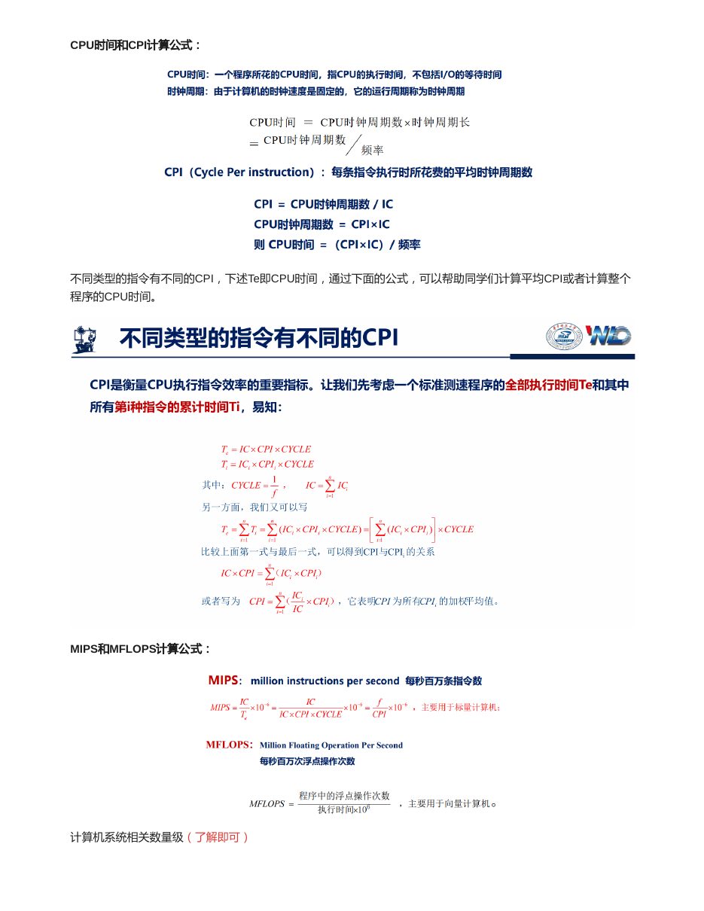
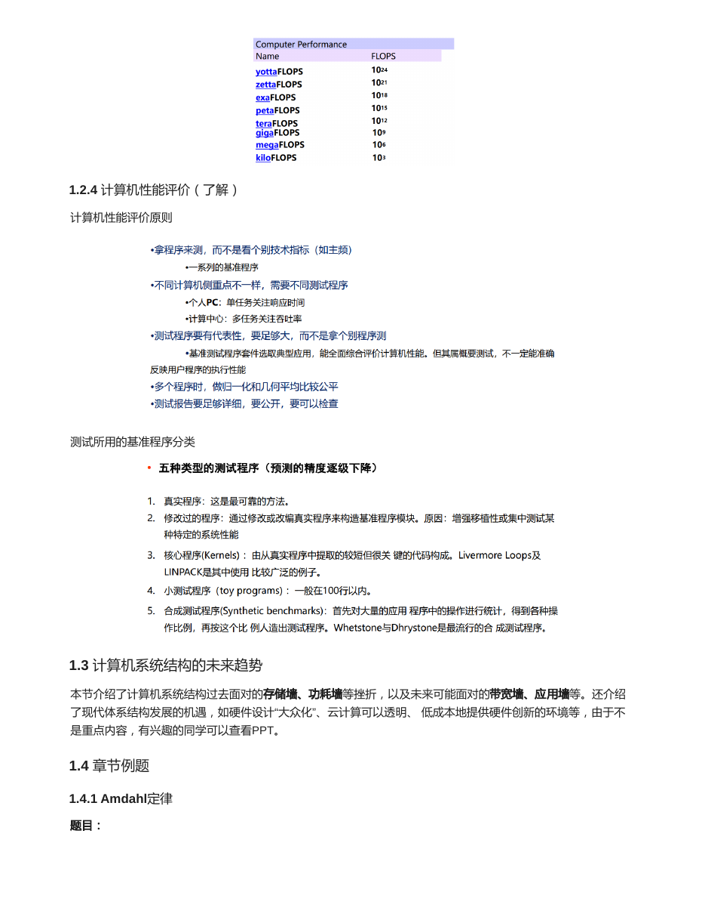
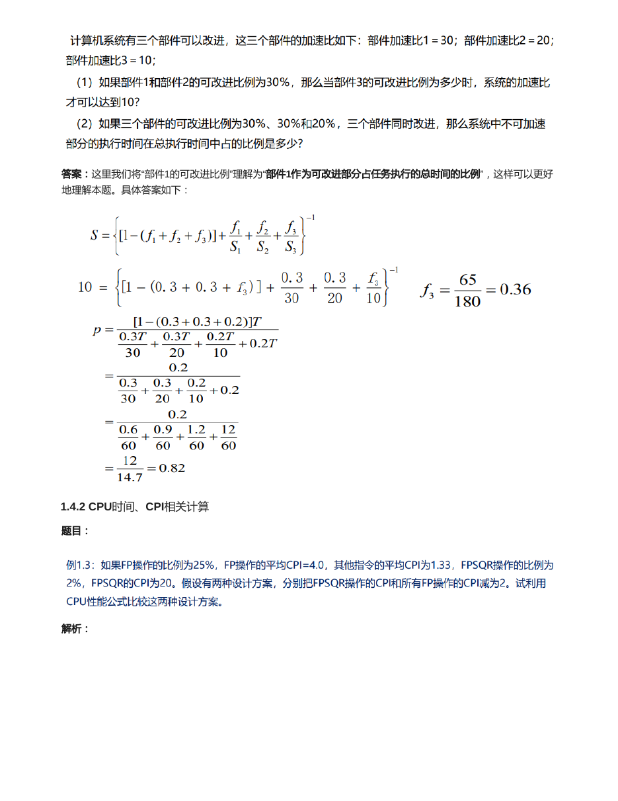
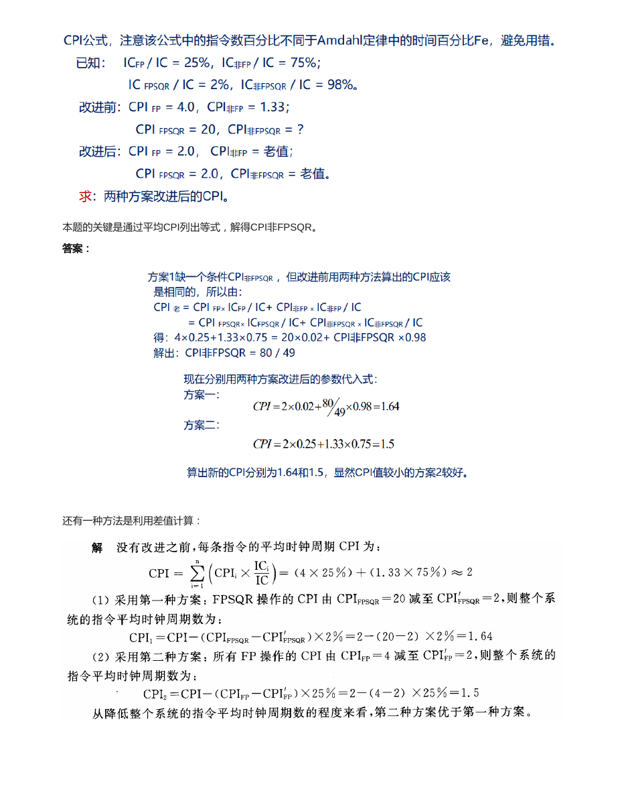

先看主线，再背公式，最后做题
每个专题页都按“概念框架、公式变量、典型题型、原讲义对照、自测问题”组织。复习时从左侧目录跳转，遇到计算题直接回到高亮公式段。
这一页负责打地基：性能是什么意思，怎么计算加速比，CPU 时间、CPI、MIPS、MFLOPS 各自怎么用，以及为什么基准测试要谨慎比较。
每个专题页都按“概念框架、公式变量、典型题型、原讲义对照、自测问题”组织。复习时从左侧目录跳转，遇到计算题直接回到高亮公式段。
7 页原讲义截图可展开核对，适合考前查原表、原图和例题。
正文已经把知识点重新组织；这里保留讲义页面缩略图，方便你在需要时回看原版题目、图和表。



基本概念章是后续所有计算题的入口。流水线、Cache、多处理器看起来题型不同，但最终常常会回到执行时间、CPI、吞吐率、加速比这些量。
单个任务从开始到完成的时间，个人用户最关心。越短表示性能越好。
单位时间完成的任务数量，服务器和批处理系统更关心。越大表示系统处理能力越强。
改进前执行时间除以改进后执行时间，用来衡量优化带来的整体收益。
| 类型 | 含义 | 复习要求 |
|---|---|---|
| SISD | 单指令流、单数据流，传统单处理器模型。 | 了解。 |
| SIMD | 单指令流、多数据流，同一操作作用于多个数据。 | 能和向量处理、GPU 直觉联系起来。 |
| MISD | 多指令流、单数据流，现实中少见。 | 了解即可。 |
| MIMD | 多指令流、多数据流，现代多处理器和集群常见。 | 后面多处理器章节会用到。 |
Amdahl 定律的核心直觉是：优化收益不仅取决于局部优化有多快，还取决于这个局部在总执行时间中占多大比例。
| 符号 | 含义 | 做题提醒 |
|---|---|---|
| f | 可改进部分原来占总执行时间的比例。 | 题目说“某部件占总时间 40%”，通常就是 f = 0.4。 |
| s | 可改进部分自身被加速的倍数。 | 题目说“速度提高到原来的 5 倍”，通常就是 s = 5。 |
| 1 - f | 不可改进部分。 | 这部分决定加速比上限，千万不能丢。 |
1 - f 和可改进部分 f。f / s。1 / 改进后总时间。这个公式最适合分析处理器或存储优化对程序执行时间的影响。后面 Cache 题经常把存储器停顿周期加到 CPI 里。
| 指标 | 含义 | 常见计算 |
|---|---|---|
| IC | Instruction Count，执行的指令条数。 | 和算法、编译器、ISA 有关。 |
| CPI | Cycles Per Instruction，每条指令平均时钟周期数。 | 不同类型指令 CPI 不同，用加权平均。 |
| 时钟周期时间 | 一个时钟周期的长度。 | 等于 1 / 时钟频率。 |
| 指标 | 公式 | 适用范围 |
|---|---|---|
| MIPS | 指令条数 / (执行时间 × 10^6) | 同一程序、同类机器下可参考；跨 ISA 容易误导。 |
| MFLOPS | 浮点操作次数 / (执行时间 × 10^6) | 更适合浮点密集型程序；不同程序浮点操作复杂度也可能不同。 |
如果题目要求比较真实性能，优先使用执行时间；如果只是给定指令数和时间求指标，再套 MIPS/MFLOPS。
基准程序可以分为真实应用程序、核心程序、小型基准程序和合成基准程序。越接近真实负载，评价越可信；越小越容易分析，但也越可能偏离真实表现。
资料中还提到体系结构发展的若干“墙”和机遇。它们不是本章计算重点，但能帮助理解为什么后续章节要研究存储层次、功耗、互联和并行。
| 趋势/问题 | 含义 | 关联章节 |
|---|---|---|
| 存储墙 | 处理器速度提升快于存储器访问速度，访存成为瓶颈。 | Cache、主存、虚拟存储。 |
| 功耗墙 | 频率继续提升会带来功耗和散热压力。 | 多核、多处理器、能效设计。 |
| 带宽墙 | 数据搬运能力限制系统吞吐。 | 主存带宽、I/O、互联网络。 |
| 应用墙 | 硬件能力增长需要应用并行性和软件生态配合。 | 指令级并行、多处理器。 |
| 硬件设计大众化与云计算 | 工具链和云资源降低硬件创新门槛。 | 体系结构未来机会。 |
fi 是第 i 个可改进部件在原总执行时间中的比例，si 是该部件自身加速比。若题目反求某个比例，把目标总加速比代入即可。
部件1、2、3加速比分别为 30、20、10。若 f1 = 0.3，f2 = 0.3，要求总加速比 S = 10，求 f3。
若 f1 = 0.3，f2 = 0.3，f3 = 0.2，三部分分别加速 30、20、10 倍，则改进后总时间为：
注意：CPI 公式中的比例是“指令条数比例”，而 Amdahl 里 fi 是“时间比例”。两者不能混用。
FP 指令占 25%，非 FP 占 75%；FPSQR 占全部指令 2%，它属于 FP。改进前 CPI_FP = 4.0，CPI_非FP = 1.33，CPI_FPSQR = 20。
先由改进前平均 CPI 反求普通 FP 指令 CPI：
方案一：只把 FPSQR 的 CPI 从 20 降到 2。
方案二：把所有 FP 指令 CPI 从 4 降到 2。
所以方案二更好。
如果题目问“哪个机器更快”，优先比较执行时间；如果题目明确给指令数/浮点操作数和时间，再计算 MIPS/MFLOPS。
计算机系统有三个部件可以改进，三个部件的加速比分别为：部件加速比1 = 30，部件加速比2 = 20，部件加速比3 = 10。
把原总时间归一化。多部件 Amdahl 写成：S = 1 / ((1 - f1 - f2 - f3) + f1/s1 + f2/s2 + f3/s3)。
第1问列式：0.1 = (1 - 0.3 - 0.3 - f3) + 0.3/30 + 0.3/20 + f3/10，解得 f3 = 65/180 ≈ 0.36。
第2问改进后总时间为 0.3T/30 + 0.3T/20 + 0.2T/10 + 0.2T = 0.245T，不可加速部分占比 0.2T/0.245T ≈ 0.82。
FP 操作比例为25%，FP 操作平均 CPI = 4.0，其他指令平均 CPI = 1.33；FPSQR 操作比例为2%，FPSQR 的 CPI = 20。
有两种设计方案：方案一把 FPSQR 操作的 CPI 减为2；方案二把所有 FP 操作的 CPI 减为2。试利用 CPU 性能公式比较两种设计。
先用改进前平均 CPI 反推出非 FPSQR 的 FP 指令 CPI：4 x 0.25 + 1.33 x 0.75 = 20 x 0.02 + CPI非FPSQR x 0.98，得 CPI非FPSQR = 80/49。
方案一：CPI = 2 x 0.02 + (80/49) x 0.98 = 1.64。
方案二：CPI = 2 x 0.25 + 1.33 x 0.75 ≈ 1.50。CPI 更小，所以方案二更好。
合上正文后先试着口答，再展开看答案。能把这些问题讲清楚，本章主线基本就稳了。
响应时间适合评价单个任务完成快慢；吞吐率适合评价服务器或批处理系统单位时间完成多少任务。
IC 受算法/编译器/ISA 影响，CPI 受微结构和存储停顿影响，时钟周期受实现工艺和关键路径影响。
不同 ISA 的一条指令工作量不同，MIPS 只看每秒执行指令数，可能掩盖真实执行时间。
把总时间归一为 1，不可改进部分保留，每个可改进部分写成 fi/si，改进后总时间取倒数。
多数现代多处理器属于 MIMD，即多指令流、多数据流。
下面是原资料的页面渲染图，正文复习完后可以展开对照图、公式和例题。




{kind=link}
{kind=link}